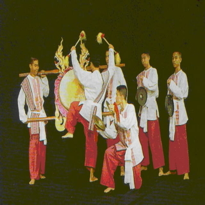
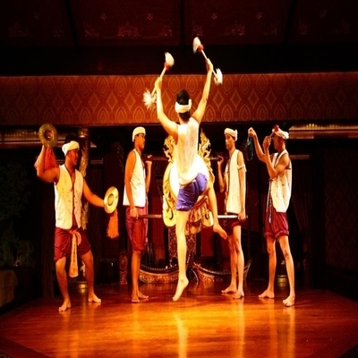
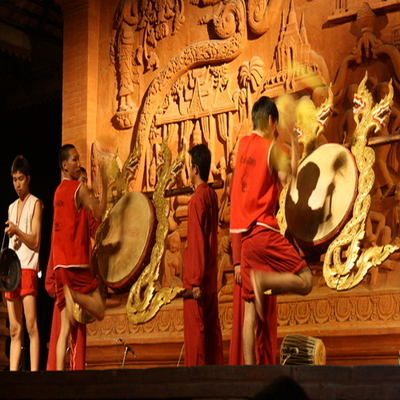

กลองสะบัดชัย
กลองสะบัดชัย เป็นศิลปะการแสดงพื้นบ้านล้านนาอย่างหนึ่ง ซึ่งปัจจุบันมักจะพบเห็นในขบวนแห่ หรืองานแสดงศิลปะพื้นบ้านโดยทั่วไป
ลีลาในการตีมีลักษณะโลดโผน เร้าใจ มีการใช้อวัยวะหรือส่วนต่าง ๆ ของร่างกาย เช่น ศอก เข่า ศีรษะ ประกอบในการตีด้วย ทาให้การแสดงการตีกลองสะบัดชัยเป็นที่ประทับใจของผู้คนที่ได้ชม จนเป็นที่นิยมกันอย่างกว้างขวางในปัจจุบัน

บทบาทของกลองสะบัดชัย
อาจกล่าวได้ว่า การตีกลองสะบัดชัย เป็นศิลปะอย่างหนึ่งที่ได้นาชื่อเสียงทางด้านวัฒนธรรมพื้นบ้านสู่ล้านนา และบทบาทของกลองสะบัดชัยจึงอยู่ในฐานะการแสดงในงานวัฒนธรรมต่าง ๆ เช่น งานขันโตก งานพิธีต้อนรับแขกเมือง และขบวนแห่ ฯลฯ
แต่ในโอกาสในการใช้กลองสะบัดชัยแต่เดิมจนถึงปัจจุบันยังมีอีกหลายประการ ซึ่งมีหลักฐานปรากฏในวรรณคดีต่าง ๆ มากมาย สรุปได้ดังนี้
1. ใช้ตีบอกสัญญาณ
2. เป็นมหรสพ
3.เป็นเครื่องประโคมฉลองชัยชนะ
4. เป็นเครื่องประโคมเพื่อความสนุกสนาน
การส่งเสริม
ปัจจุบันมีการส่งเสริมให้มีการฟื้นฟูให้หวนกลับมาสู่ความนิยมอีก โดยประเภทแรกนอกจากจะมีการสอนให้ตีและมีบทบาทในวัด ก็ได้มีการนำเข้าสู่ขบวนซึ่งอาจมีการเคลื่อนย้ายโดยยกขึ้นค้างแล้วติดล้อเลื่อน ประเภทที่สองมีการเผยแพร่และกาลังเป็นที่นิยม สาหรับประเภทสุดท้ายก็ปรากฏแพร่หลายจนเกือบจะกลายเป็นสัญลักษณ์ของกลองล้านนา
